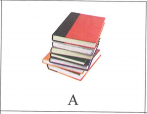
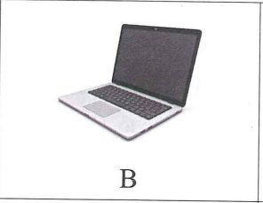
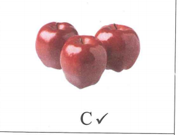
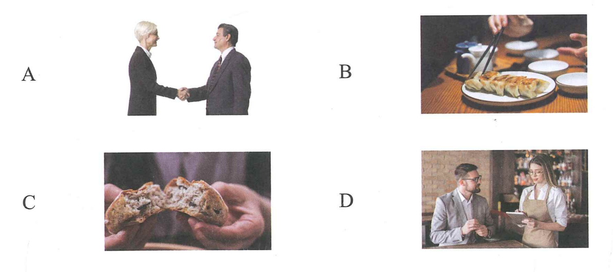
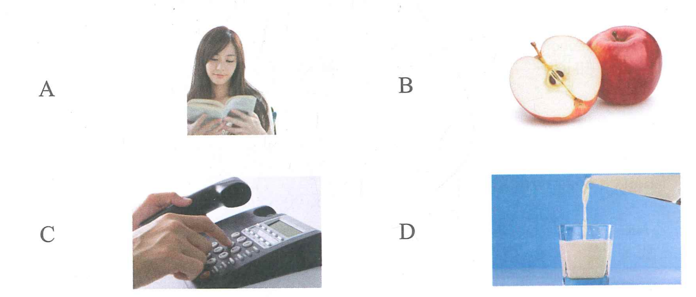

1.
Bài 13 · 第十三课
请给我一杯茶
Cho tôi một cốc trà.
一、语音 · Ngữ âm
1. 声调辨析 · Phân biệt thanh điệu
Nghe ghi âm, chọn âm tiết có thanh điệu khác trong mỗi nhóm.
🔊 Phân biệt thanh điệu
2.
3.
4.
2. 听音节，匹配词语 · Nghe âm tiết và ghép với từ
Nghe ghi âm, điền số tương ứng vào bên cạnh từ, sau đó đọc to.
🔊 Nghe âm tiết và ghép từ
Âm tiết
1. nǐ hǎo
2. gōngsī
3. xiānsheng
4. gōngzuò
5. jiǎozi
6. péngyou
词语 · Từ ngữ
你好 （1）
饺子 （）
公司 （）
朋友 （）
先生 （）
工作 （）
二、汉字 · Chữ Hán
汉字书写（六）· Viết chữ Hán (6)
1. 认识汉字结构：独体字与合体字 · Nhận biết chữ độc thể và chữ hợp thể
Chữ độc thể và chữ hợp thể là hai kiểu kết cấu cơ bản của chữ Hán. Chữ độc thể được cấu tạo từ các nét cơ bản và không thể tách thành hai hay nhiều bộ phận cân bằng. Ví dụ: “人” là chữ độc thể được cấu tạo từ hai nét bút.
Chữ hợp thể được cấu tạo từ hai hoặc nhiều bộ kiện hoặc thiên bàng. Ví dụ: “认” gồm bộ ngôn “讠” và chữ “人”.
Chữ hình thanh là chữ hợp thể gồm hình bàng và thanh bàng. Hình bàng chủ yếu biểu thị ý nghĩa; thanh bàng gợi âm đọc. Ví dụ: trong “奶、姥、妈、姐、妹”, bộ “女” liên quan đến nữ giới; phần bên phải giúp suy đoán cách đọc.
| Loại | Ví dụ |
|---|---|
| 独体字 · Chữ độc thể | 人、上、下…… |
| 合体字 · Chữ hợp thể | 和、认、什…… |
2. 学练合体字结构 · Học và luyện tập kết cấu chữ hợp thể
和
左右结构Kết cấu trái–phải.
做
左中右结构Kết cấu trái–giữa–phải.
3. 抄写字词 · Chép lại chữ và từ vựng
儿
女儿弟
弟弟汉
汉语谢
谢谢三、听力 · Phần nghe
🔊 Bài nghe mô phỏng Bài 13
第一部分 · Câu 1–3



sān三ge个píngguǒ苹果 → C
1.
2.
3.
第二部分 · Câu 4–5
Jīntiān今天tiānqì天气zěnmeyàng怎么样？
A. fēicháng非常rè热B. hěn很hǎotīng好听C. zài在hē shuǐ喝水
→ A4.
5.
第三部分 · Câu 6–8
女
Nǐ hǎo你好！
男
Nǐ hǎo你好！Hěn很gāoxìng高兴rènshi认识nǐ你。

6.
7.
8.
第四部分 · Câu 9–10
Xiàwǔ下午wǒ我qù去chāoshì超市wǒ我xiǎng想mǎi买yìxiē一些shuǐguǒ水果。
★ Shuōhuàrén说话人xiàwǔ下午qù去nǎlǐ哪里？
A. chāoshì超市B. yīyuàn医院C. xuéxiào学校
→ A9.
10.
四、阅读 · Phần đọc
第一部分 · Câu 11–13

Wǒ我hěn很xǐhuan喜欢zhè这běn本shū书。→ A
11. Tā她tài太xiǎo小le了zhège这个píngguǒ苹果gěi给tā她yíbàn一半ba吧。
12. Qǐng请gěi给wǒ我yì一bēi杯niúnǎi牛奶xièxie谢谢。
13. Wǒ我dǎ diànhuà打电话wèn问yíxià一下ba吧。
第二部分 · Câu 14–16
A. Bú kèqi不客气。B. Yí一ge个miànbāo面包。C. Bù zhīdao不知道。D. Hǎo de好的xièxie谢谢！
Nǐ你hē shuǐ喝水ma吗？→ D
14. Nàli那里mài bu mài卖不卖shǒujī手机？
15. Wǒ我huì会xiě写le了xièxie谢谢lǎoshī老师。
16. Nǐ你yào要shénme什么？
第三部分 · Câu 17–18
A. gěi给B. yíxià一下C. míngzi名字
Nǐ你jiào叫shénme什么（C）？
17. Nǐ你kàn看（ ），nǐ你yào要shénme什么？
18.
男
Qǐng zuò请坐nín您yào要shénme什么？
女
Qǐng请（ ）wǒ我yì一bēi杯chá茶。
第四部分 · Câu 19–20
Qǐngwèn请问xiànzài现在jǐ几diǎn点le了？
★ Shuōhuàrén说话人xiǎng想zhīdao知道shénme什么？
A. shíjiān时间B. míngzi名字C. fángjiānhào房间号
→ A19.
Míngtiān明天Xīngqītiān星期天wǒmen我们kěyǐ可以qù去fàndiàn饭店chī吃jiǎozi饺子ma吗？
★ Míngtiān明天shì是：
20.
Bàba爸爸jīntiān今天zài在jiā家lǐ里gōngzuò工作wǒmen我们búyào不要qù去tā他de的fángjiān房间。
★ Bàba爸爸jīntiān今天：